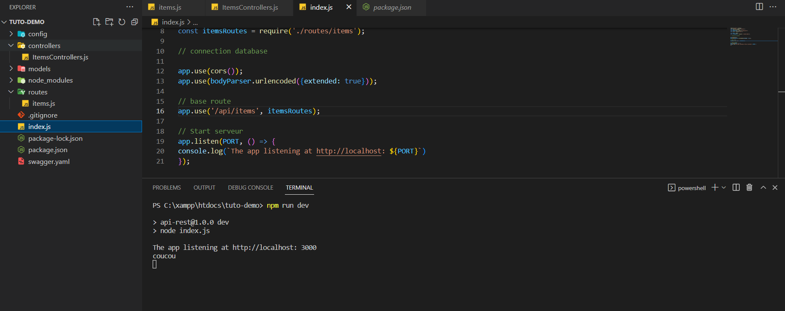

API CRUD avec Node.js et Express
// Introduction
Ce tutoriel vous guidera dans le processus de création d'une API CRUD (Create, Read, Update, Delete) simple avec Node.js et le framework Express.
/ Configuration de l'environnement
Tout d'abord, créez un nouveau dossier de projet et accédez-y dans le terminal. Ensuite, vous devrez installer les dépendances requises à l'aide du gestionnaire de paquets npm. Exécutez la commande suivante dans votre terminal :
npm init
npm install express body-parser cors dotenv
Le module dotenv est utilisé pour charger les variables d'environnement d'un fichier .env dans process.env. Le module body-parser est utilisé pour analyser les corps des requêtes entrantes. Le module cors est utilisé pour activer le partage de ressources inter-origine (CORS) dans notre application.
Écriture du code du serveur
Dans le dossier du projet, créez un nouveau fichier nommé index.js et ajoutez le code suivant :
require('dotenv').config()
const express = require('express');
const app = express();
const bodyParser = require('body-parser')
const cors = require('cors');
const PORT = 3000 ;
const itemsRoutes = require('./routes/items');
// connection database
app.use(cors());
app.use(bodyParser.urlencoded({extended: true}));
// base route
app.use('/api/items', itemsRoutes);
// Start serveur
app.listen(PORT, () => {
console.log(`The app listening at http://localhost: ${PORT}`)
});
ce code met en place la structure de base de notre serveur. Le module express est utilisé pour créer l'application Express. La variable PORT est utilisée pour spécifier le numéro de port sur lequel le serveur écoutera les requêtes entrantes. La variable itemsRoutes est utilisée pour exiger les routes pour notre API, qui seront définies dans un fichier séparé.
Ensuite, nous utilisons les modules cors et body-parser pour activer CORS et analyser les corps des requêtes entrantes, respectivement.
Enfin, nous définissons une route de base /api/todos et indiquons au serveur d'écouter sur le PORT spécifié.
Écriture des routes API
Créez un nouveau dossier nommé routes dans le dossier du projet et un nouveau fichier nommé items.js dans le dossier routes. Ajoutez le code suivant au fichier items.js :
const express = require( 'express');
const router = express.Router();
// Require controller modules.
const todoControllers = require('../controllers/ItemsControllers.js')
router.get('/', truc);
router.post('/', truc);
router.put('/:id', truc);
router.delete('/:id', truc);
module.exports = router;
Dans ce fichier, nous définissons les routes pour notre API en utilisant la fonction express.Router(). Nous avons également besoin du module contrôleur qui contiendra la logique de gestion des différentes routes.
controller de test ( sans logique )
Ce contrôleur est un exemple très simple, car il ne contient qu'une seule fonction truc qui enregistre la chaîne "coucou" dans la console. La fonction truc est une fonction flèche, qui est une syntaxe abrégée pour écrire des fonctions anonymes en JavaScript.
Dans un scénario réel, ce contrôleur contiendrait généralement une logique permettant d'interagir avec une base de données, de manipuler des données et de renvoyer des réponses au client. La fonction truc pourrait être remplacée par des fonctions qui effectuent des opérations CRUD (Create, Read, Update, Delete) sur une base de données. Le code contenu dans ces fonctions dépendrait des exigences spécifiques de l'application.
voici le code pour `controllers/itemsController` :
truc = () => {
console.log("coucou")
};
// tester
Vous pouvez maintenant tester en faisant `npm run dev` et voir un `coucou` dans votre terminal
Voici ce que vous devriez voir :
